Summit report · De La Salle-College of Saint Benilde
AI Summit Seoul 2026
My notes from AI Summit Seoul (AIS26) as an attendee — reconstructed from live-translation captures and on-site photos, mapped to Vision 2030 and a proposed ownership model for turning it into action.
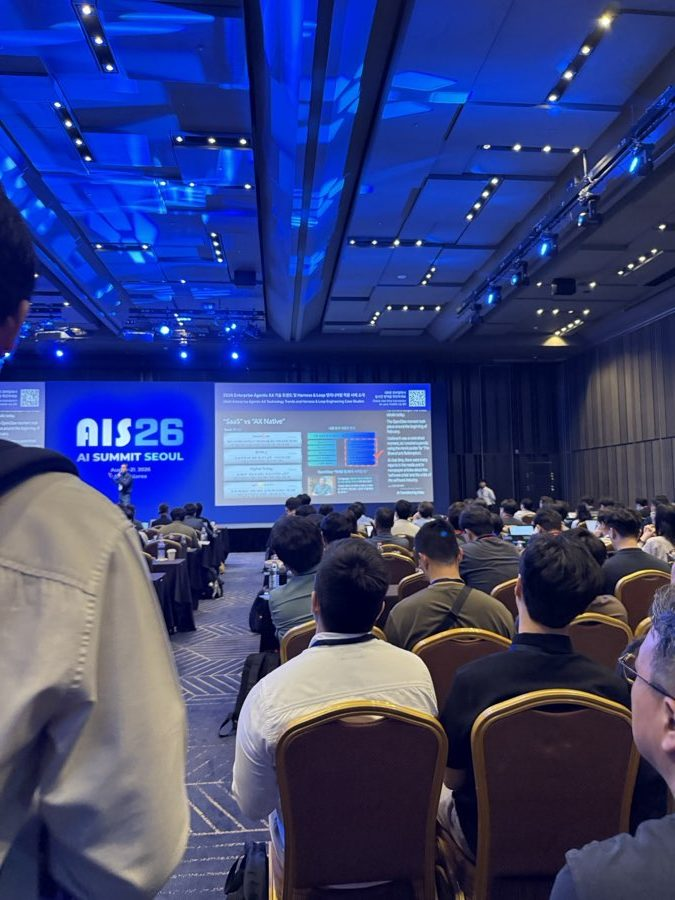
Talks & panelsAug 19–20, 2026
Exhibit floorran through Aug 21, 2026
VenueCOEX Grand Ballroom & Exhibition Hall B, Samseong-dong, Gangnam-gu, Seoul
Sessions logged21 talks / panels · 3 expo booths
10 things I took away as an attendee
01
Data is the bottleneck, not the model.
The unglamorous work — cleaning, structuring, connecting — is where AI actually lives or dies.
02
PoC ≠ production.
What works in testing often breaks at scale.
03
Building is easy.
Scaling is the real work.
04
Tacit knowledge is the new gold.
Capture the judgment calls before you can automate them.
05
Redesign process with the tech, not after it.
06
Adoption isn't a tech problem — it's a courage problem.
Someone has to press the button.
07
Silos slow AI more than compute ever will.
08
AI agents are becoming coworkers.
Start managing them like it.
09
Invest in the connectors, not just the AI.
People + process are the missing link.
10
In every gold rush, the infrastructure wins.
Bet on the picks and shovels.
00
Why this one mattered to me
I went into this summit wearing two hats: Program Lead for the Digital Transformation Office, and currently seconded as IT Director at De La Salle Lipa (DLSL). That combination is exactly why I took these notes as seriously as I did — almost every session below landed twice for me, once as "here's what we should be doing differently," and again as "here's what I'm already dealing with on the ground, right now, at DLSL." The Woori/LG panel's point about nobody wanting to press the button, the manufacturing panel's point about writing down tacit knowledge before automating it — those aren't theory to me, they're this month's actual work.
What I'm sharing below isn't a polished executive summary written after the fact. It's closer to my own working notes from the two days — the ten takeaways up top are genuinely what I walked away believing, and I've tried to keep that same plain, first-hand voice through every session. A quick honest note on the notes themselves: this was pieced together from live-translation screenshots and photos, not an official transcript, so treat exact numbers and quotes as what the speaker said rather than something I independently verified — a few names have uncertain spelling too, marked name unconfirmed. And the summit itself ran Aug 19–21; my coverage below is mostly the two days of talks and panels, plus what I caught on the expo floor.
Accelerating Breakthroughs with AI (Google DeepMind)
The Present and Future of Payment in the AI Age (Shinhan Card)
Decisions vs. Tasks: Agentic AI in Operations
Panel: Hidden Bottlenecks in Enterprise AI
Panel: AI Governance in Manufacturing
Agentic AI Strategies for Digital Resilience (Cisco)
From Intuition to Intelligence (Gong)
Expo floor: robotics, ed-tech, health-AI booths (through Aug 21)
01
Six terms worth knowing before you read on
Skip this if you're already fluent in AI-conference jargon. Otherwise, these six terms show up repeatedly below.
Agentic AI — AI that doesn't just answer a question, but takes multi-step actions on its own toward a goal.
AX — shorthand for "AI Transformation," the enterprise-wide effort to adopt AI, not just a single tool.
Harness Engineering — the tooling and guardrails around an AI model so it can run unsupervised.
Sim-to-Real gap — when something tested in a lab/simulator fails once it meets real-world mess.
World model — an AI's internal understanding of how physical things behave.
FDE (Forward-Deployed Engineer) — a vendor's own engineer embedded inside a customer's rollout.
02
Day 1 — Foundations & the enterprise reality check
The first day moved from where agentic AI came from, to how far it actually reaches into production today.
Morning · Main Stage
The Long Road to Agentic AI: A Pioneer's Perspective선구자의 관점에서 본 AI 어시스턴트에서 에이전틱 AI의 시대
Speaker name not captured on slideCareer: SRI → Nuance → Yahoo → Cortana → Google Assistant → Samsung Bixby/Viv → Georgia Tech
Highlights
Traced "agentic AI" back to SRI's 1995 Office Assistant — the direct ancestor of Siri and today's AI agents.
Argued 2010s-era assistants (Cortana, Google Assistant, Bixby) were deliberately limited, but controllable and fixable when something went wrong.
Called 2022's ChatGPT moment "the wrong turn": fluent, but the older, more controllable structure was thrown out along with the friction.
Cited 2026 research: today's agents guess when a task is unclear (89% success with a clear task vs. 6.7% with a vague one).
InsightSitting through this, what stuck with me is that the old assistants could actually explain themselves and get fixed when they got something wrong. Today's AI just sounds confident — even when it's guessing. For any chatbot or advising tool we look at, that's the real question to ask a vendor: what does it do when it's not sure? A smooth demo won't show you that; you have to ask directly.
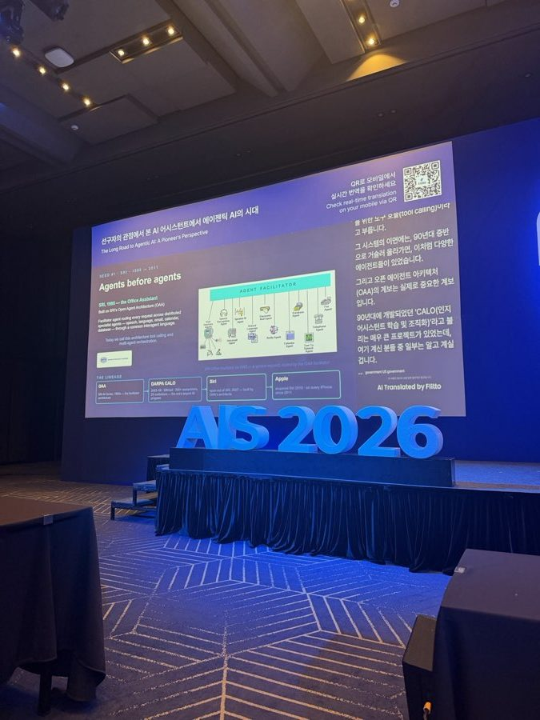
SRI's 1995 "Office Assistant" — presented as the direct ancestor of today's AI agents.
Vision 2030 pillarFuture Ready
TakeawaySounding smart isn't the same as being reliable. Before we put any AI assistant in front of students for advising or admissions, we should make the vendor show us what happens when a student asks something confusing or off-topic — not just watch a polished demo.
Morning · Main Stage
Agentic AI in Space: Traditional and Agentic AI Are Revolutionizing Space지구 밖의 자율 AI: 60개 위성이 스스로 생각하고 협력하는 법
Speaker name not captured on slide
Highlights
Demoed a workflow that detects an event, automatically picks the right satellites to look at it, and tracks it — shown live with a simulated Mount Pinatubo eruption.
Framed the goal as "humans on the loop, not in the loop" — people set intent and check results; the system does the coordination.
InsightThis works because if the system points a satellite the wrong way, you just point it again — no harm done. A school doesn't get that luxury: a misrouted student inquiry, or a wrongly flagged academic-integrity case, isn't something you just "try again." So "let AI coordinate, humans just check" only really works for the low-stakes stuff.
Vision 2030 pillarFuture Ready
TakeawayThis "set the goal, let it coordinate, check the result" pattern is worth borrowing — but only for tasks where a mistake is cheap to catch and fix, like syncing schedules between offices. Anything touching a student's record should stay more hands-on.
Morning · Main Stage
Is AI Actually Helping Enterprise Productivity?
Featuring Prof. Kyungjong Lee — KB Kookmin Bank / KB Financial Group
Highlights
Of executives running multiple AI projects, only 6% said the projects moved profit by more than 2% — 94% saw no measurable financial impact.
A Bank of Korea survey found 60–70% of Korean companies say they're adopting AI, but fewer than 10% report actual results.
Gartner data: over half of enterprise AI projects get cancelled at the pilot stage.
InsightThree separate studies, same story: most companies using AI can't actually show it did anything for their numbers. That's my takeaway #2 in a nutshell — a working pilot and a working product are two different things. We should expect the same slow, unclear payoff from our own chatbot and advising pilots, and just say that plainly to the Board instead of overpromising.
TakeawayUsing AI and AI actually helping are two different claims. Every pilot we run should track one specific thing — hours saved, faster replies, more students staying enrolled — before we call it a win or spend more on it.↳ Ties to takeaway #2: PoC ≠ production.
Midday · Main Stage
2026 Enterprise Agentic AX Technology Trends: Harness & Loop Engineering2026 Enterprise Agentic AX 기술 트렌드 및 Harness & Loop 엔지니어링 적용 사례 소개
Speaker name not captured on slide
Highlights
Described a maturity ladder — casual chatbot use, then developer tools, then multi-tool platforms, then fully governed enterprise setups.
Explained "Loop Engineering": set a goal, let the agent try, have it check its own work, fix on failure, stop on success.
Anthropic, OpenAI, AWS, and Microsoft have together committed over $9 billion to embedding their own staff inside customers' AI rollouts.
InsightEvery big AI company is now doing the same thing: sending their own people to actually help clients set things up, not just selling the software. That told me picking an AI isn't the hard part anymore — getting it running properly is. When we talk to vendors, we should be asking what hands-on help comes with the contract, not just what the AI can do.
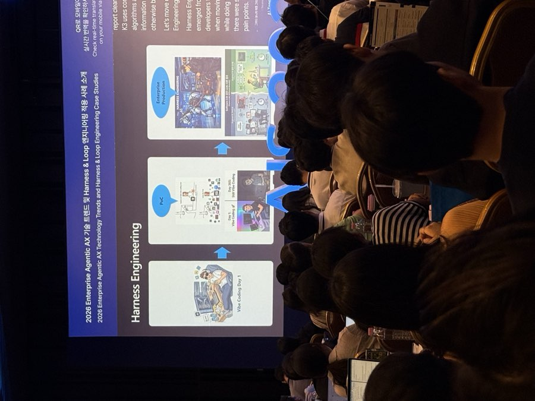
"Harness Engineering" — the missing layer between a prototype and enterprise-grade AI.
Vision 2030 pillarsFuture Ready · Global Partnership Engagement
TakeawayAsk every vendor what real setup help they'll give us — most of the big names now offer it. Building a demo is easy; getting it actually running for the whole school is the real work.↳ Ties to takeaway #3: Building is easy. Scaling is the real work.
Afternoon · Main Stage
The Agentic Data Stack: Speed and Simplicity for AI That Scales
ClickHouse
Highlights
AI agent queries shifted from one predictable request per user to many unpredictable requests at once.
OpenAI's daily logs compare to "500 Libraries of Congress a day"; Anthropic credited this tech in shipping Claude 4.
InsightAn AI tool hits a database very differently than a normal app — lots of requests firing off at once, not one at a time. If a lot of students use our chatbot or advising tool together, our current systems could slow down or break in ways nobody tested for. That's a data problem before it's ever a model problem.
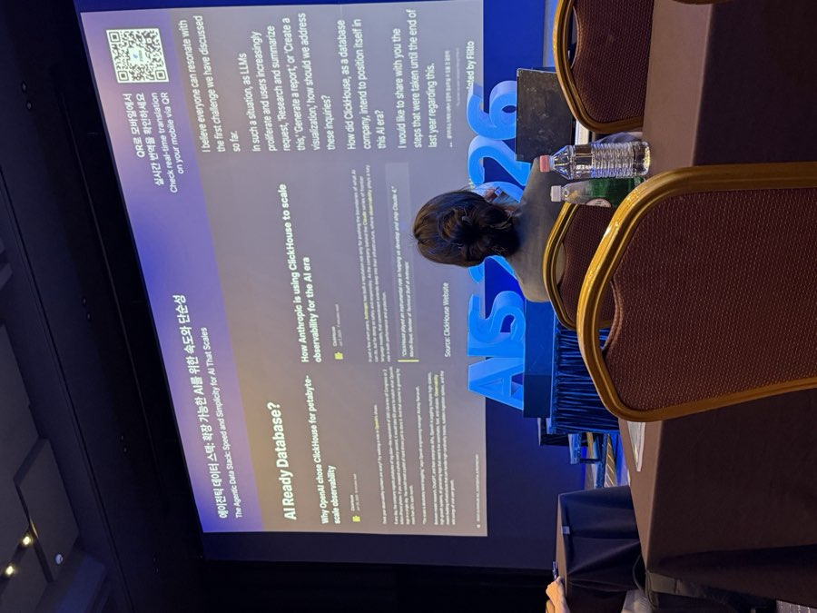
ClickHouse's closing slide, citing use inside OpenAI's and Anthropic's own systems.
Vision 2030 pillarFuture Ready
TakeawayBefore we pick a platform, IT should check if our systems can actually handle a lot of students using an AI tool at the same time — not just one person testing it quietly.↳ Ties to takeaway #1: Data is the bottleneck, not the model.
Afternoon · Main Stage
From Models to Reality: What It Takes to Run AI Reliably at Scale모델에서 현실까지: 대규모 AI를 안정적으로 운영하기 위한 조건
Colin Presly · VP, Customer Engineering, Seagate Technology
Highlights
Three stages: can we build something useful → can we run it in production → does it create lasting value. Most stay stuck between the first two.
85–95% of all AI data ultimately rests on ordinary hard drives, not premium chips.
InsightIt's easy to forget, but every AI tool has to keep its data somewhere, and that costs money for years, not just once. Yes, the speaker sells storage — but the point held up: most of what a school ends up paying for AI comes down to where the data lives and how long we keep it, not the flashy part.
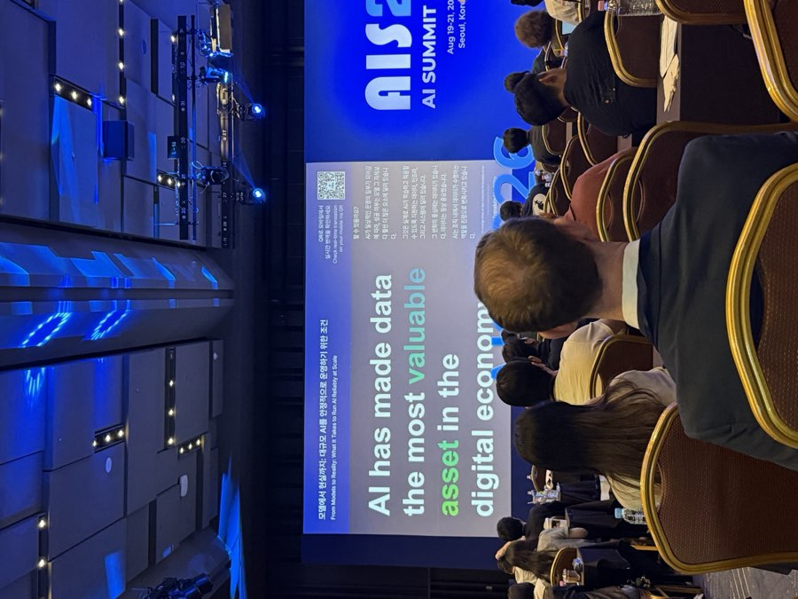
Seagate's point: AI made the underlying data itself the scarce, valuable asset.
TakeawayBefore we spend more on AI, Finance and IT should figure out where all this student data will actually live, and what that costs us over time — not just the price tag on the AI tool itself.↳ Ties to takeaway #10: infrastructure wins the gold rush.
Afternoon · Main Stage
How AI Is Redefining the Future of WorkAI가 바꾸는 일의 미래
Speaker name not captured on slide
Highlights
Roughly 30% of the global office workforce is now Gen Z, with higher entrepreneurial instincts than earlier generations.
InsightThis talk was about the workforce, but it made me think about our own students instead. Gen Z already grew up using AI. Our incoming students are the same — they'll already know these tools before they even enroll. So our AI training shouldn't just be for staff; the students are already ahead of us on this one.
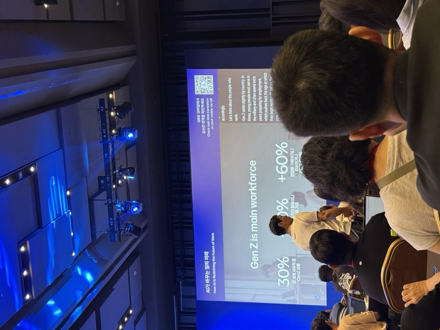
Workforce-composition framing for why AI-native habits are arriving from the entry level up.
TakeawayOur newest students are probably more comfortable with AI than a lot of our staff are. If we only train faculty and leadership, we're missing where AI use is already strongest — with the students themselves.
Late afternoon · Keynote
Building as a Creative Act: An Innovator's Mindset for the AI AgeAI 시대의 혁신가의 마인드셋
Savannah Kunovsky · Managing Director, IDEO AI MTechLab
Highlights
Framed as "the innovator's mindset in the age of AI." Its idea of embodiment was picked up directly by the Physical AI panel later that day.
InsightThe word "embodiment" kept coming back later that same day, especially in the robotics panel. It basically means AI that has to actually do something in the real world, not just chat. Worth keeping in mind once we go beyond a simple chatbot — things like campus access systems, labs, or hands-on design work.
Introduction slide for the IDEO AI MTechLab keynote.
Vision 2030 pillarFuture Ready
TakeawayKeep an eye on AI that has to act in the real world, not just answer questions — it matters most once we move past classroom chat tools into things like campus safety systems or studio work.
Late afternoon · Main Stage
Beyond Better Models: What Will Define the Next Era of AI?AI 에이전트의 미래: 더 나은 모델이 아니라 더 나은 워크플로우
Genspark
Highlights
$250M revenue in 12 months from zero; $645M raised at $2.6B valuation. Core message: "better models will keep shipping — the breakthrough is context."
InsightTwo completely separate speakers, hours apart, basically said the same thing: the real improvement isn't a smarter model, it's an AI that remembers you. For us, that means the real question for any vendor is whether the tool remembers a student's history — not which brand of AI sits behind it.
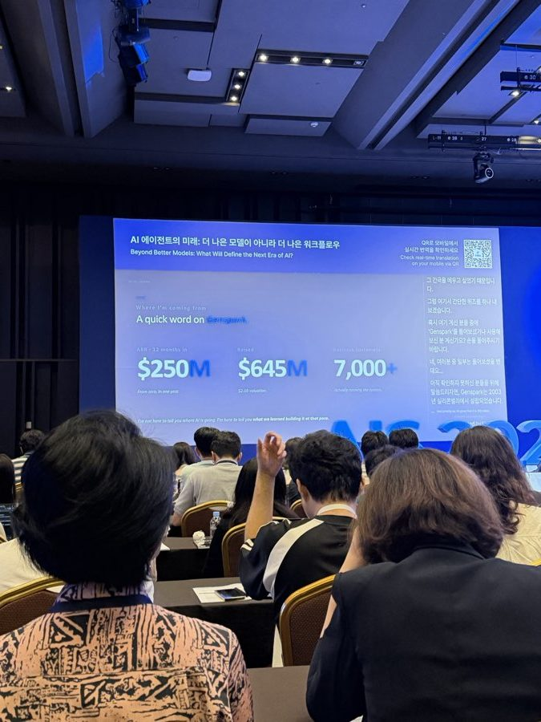
Genspark's growth numbers, offered as evidence for its "context, not bigger models" argument.
Vision 2030 pillarFuture Ready
TakeawayAn AI that remembers a student across conversations matters more than which model powers it. Ask vendors about memory, not just intelligence.
Evening · Keynote Panel
The Era of Physical AI: The Future of Industry Transformed by Physical AI
Moderator: Prof. Doohee Jeong — Handong Global University / Impactive AIProf. Ahyoung Kim — Seoul National UniversityTony Jang — CEO, FactoryLab.AI (ex-Hyundai AutoEver)CTO Seung-young Lee — LIG Defense & Aerospace
Highlights
Demo vs. real deployment (Tony Jang): does using it require changing how things already work? Does a failure fit inside normal turnaround time? Is the retraining data clearly someone's job?
Where should AI's freedom to act stop? (CTO Lee): the line is whether the outcome is reversible, not how smart the AI seems.
A described Tesla Optimus incident — misidentifying a coworker as a part — was cited as the real cost of trusting an unproven world model.
InsightThis is the one rule from the whole summit I'd actually want us to write down: let AI decide on its own only if a mistake can be undone. If it can't be undone — flagging a student for probation, a safety escalation — a person makes that call, no matter how good the AI looks. That's not really a tech decision, that's someone having the nerve to say "not this one."
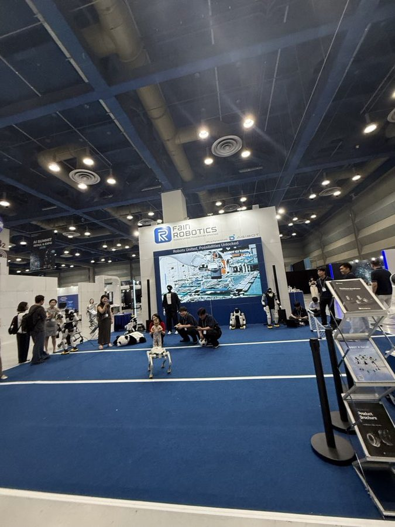
Humanoid and quadruped robots on the expo floor — "Physical AI" made tangible one floor down from the panel.
Vision 2030 pillarFuture Ready
TakeawayFor our Mental Health and Advising AI tools: let the AI notice things and suggest, but keep the final call with a person for anything that's hard to undo. Write this down now, while both tools are still being built.↳ Ties to takeaway #6: someone has to press the button.
Evening · Main Stage
The Rise of AI-Native WorkAI 네이티브 워크플로우 혁명
Laurent Thevenet — Head of Creative Technology, APAC & MEA, Publicis Groupe
Highlights
"Instant capability isn't expertise" — the gap between fast AI output and knowing what's actually good is "slop."
Ownership rule: 5 users, the builder owns it; 50, needs a named owner; 500, needs a full team.
InsightThe rule was: 5 users, one person owns it casually; 50, it needs a real owner; 500, it needs a team. What I'd add is that it's less about headcount and more about how much damage a mistake could do. One teacher using an AI grading tool casually is fine; the same tool deciding grades department-wide is a different animal entirely.
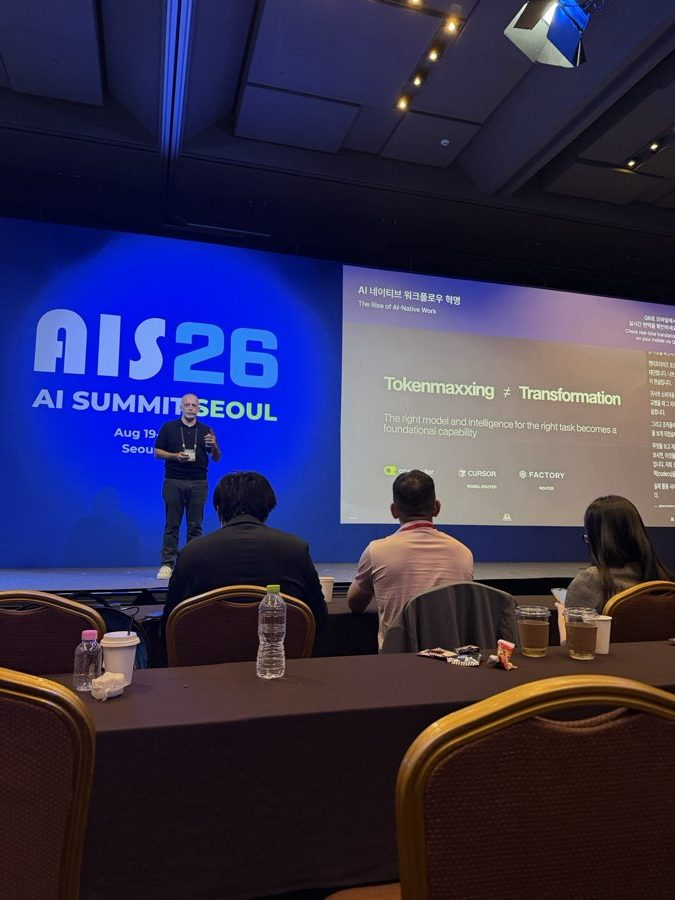
Routing tasks to the "best" model is plumbing, not a strategy on its own.
TakeawayThe moment a personal AI habit becomes something a whole department relies on, someone needs to officially own it — don't wait until it's already everyone's tool to figure out who's in charge.↳ Ties to takeaway #5: redesign process with the tech, not after it.
03
Day 2 — Industry deployment & governance
The second day shifted from "what is agentic AI" to "why doesn't it work yet at our scale."
Morning · Main Stage
The Conditions for AX Success and a Truly AI-Native Enterprise
Speaker name not captured on slide
Highlights
Presented a 4-level scorecard for AI maturity — from occasional tool use to genuine, everyday agentic work.
InsightSimple idea, but a good one: a 4-level scale for how far along a team actually is with AI, instead of just saying "we use AI now." We could use something like this ourselves so departments aren't all just guessing how ready they really are.
Vision 2030 pillarFuture Ready
Captured only in slide/photo form; caption detail wasn't fully recovered from the source images.
Morning · Track A
Accelerating Breakthroughs with AI: Unlocking Opportunities in Traditional Industries
Ramine Tinati — Head of APAC, Google DeepMindModerator: Seri Kim
Highlights
DeepMind's science-first roots (AlphaGo, played in Seoul a decade ago), AlphaFold, materials-science and weather models.
Repeated the central statistic: roughly 80% of AI projects never reach full production — a systems problem.
Four fixes: solid verified data first, continuous domain re-checking, embedded (not bolted-on) workflows, real safety/oversight checks.
InsightWhat stood out is that DeepMind opened with their slowest, least flashy work — predicting protein shapes — instead of a chatbot trick. It felt like "we don't need a gimmick, our stuff actually works." Good habit to copy: ask any vendor to show their most boring, most tested work, not their flashiest demo.
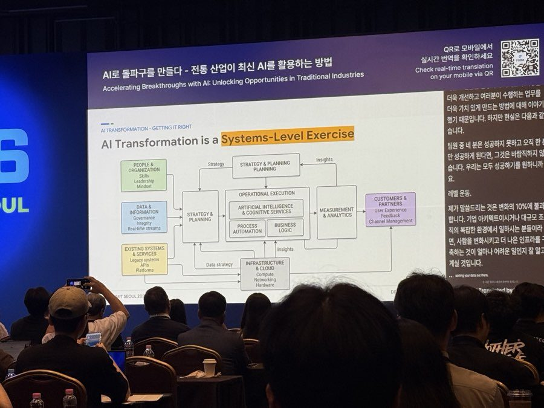
DeepMind's framing: AI transformation succeeds or fails as a systems-level exercise.
Vision 2030 pillarsFuture Ready · Global Partnership Engagement
Takeaway80% of AI projects never really launch — and it comes down to messy data and weak habits, not bad AI. DeepMind also offers some research tools free to schools, worth someone looking into.↳ Ties to takeaways #1 and #2: data first, and testing well ≠ working at scale.
Morning · Main Stage
The Present and Future of Payment in the Age of AIAI 기술과 만난 결제(Payment)의 현재와 미래
Sunghee An — Executive Director, Shinhan Card AX Research Institute
Highlights
Mapped four competitor types racing into AI payments: AI platforms, existing wallets, retailers, card networks. Introduced Shinhan's "Agent Pay" pilot.
InsightFour completely different types of companies are racing into AI payments at once. That usually means something real is happening, but nobody's actually won yet. For our own Finance office, this is more "keep watching" than "act now."
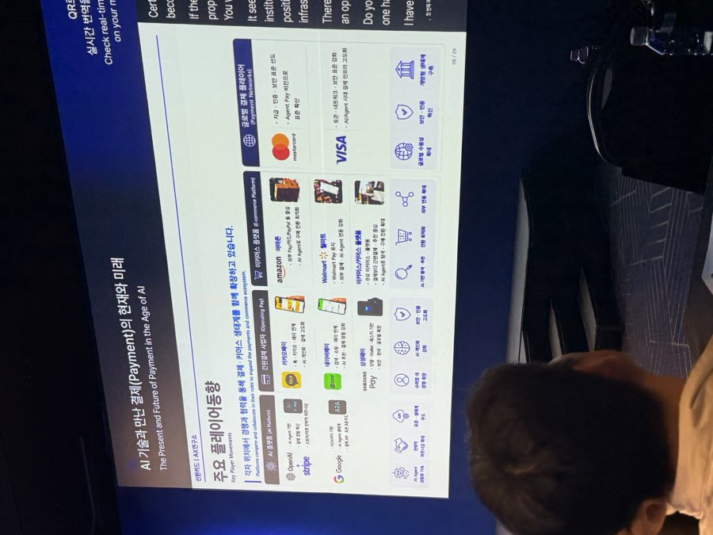
Shinhan Card's map of AI entering payments from four directions at once.
Vision 2030 pillarsFinancial Growth · Global Partnership Engagement
TakeawayAI is showing up in payments from every direction at once — worth Finance keeping an eye on, since tuition and financial aid could eventually be touched by this, but no need to rush into anything.
Midday · Main Stage
Decisions vs. Tasks: What Agentic AI Actually Means in Operations
Prent Mishra
Highlights
Captured via stage/slide photos only; the full argument wasn't recovered.
InsightEven with limited notes from this one, the main point stuck: doing a task for someone (drafting a reply) is very different from making a decision for them (approving an appeal). Before we approve any new AI tool, we should just ask plainly which one it's actually doing.
Vision 2030 pillarFuture Ready
Worth following up on if a fuller recording turns up.
Afternoon · Track D
Panel: Hidden Bottlenecks in Enterprise AI — Data Quality, Governance, and Reality
Moderator: name unconfirmed ("Seunghyun"/"Seunghwan" Lee), VP, Samil PwCYongmin Choi — Head of AI Strategy Center, Woori Financial GroupYoonhee Hwang — Senior VP, Data Intelligence, LG Electronics
Highlights
Named the real bottleneck: someone senior has to approve scaling a pilot that already works.
A gold-rush comparison: the money went to infrastructure sellers, not most people trying to use it.
LG described a common trap: a "plain-English database search" tool that broke down once scaled to thousands of real tables.
InsightWhat struck me here: the biggest reason AI projects stall isn't the tech, it's that nobody senior wants to be the one to say "yes, scale it up." LG also mentioned a tool that worked fine in testing but broke once it hit real scale — which probably makes leadership even more hesitant to approve the next one. We should fix both at once, not wait for one before starting the other.
TakeawayThe biggest blocker wasn't the AI — it was nobody wanting to be the one to approve scaling it up. We should name that person for every pilot from day one, not scramble to find them once a pilot is ready to grow.↳ This is takeaway #6, word for word: adoption is a courage problem.
Afternoon · Track D
Panel: AI Governance in Manufacturing
Three panelists, names not captured in the recovered transcript
Highlights
Named the core difficulty as turning knowledge that lives only in experienced staff's heads into shared, written data.
InsightThis one hit close to home. A lot of what makes a school actually run well lives in the heads of a few long-time staff — a registrar who just knows how to handle a weird case, an advisor who's seen every version of a tricky appeal. Before any AI tool can help with that kind of judgment call, someone has to write that knowledge down first. That's slow, unglamorous work, and it comes before the AI, not after.
Vision 2030 pillarFuture Ready
TakeawayBefore any AI tool can help with the tricky judgment calls our staff make, we need to write that knowledge down first — true for registrar, advising, and financial-aid offices especially.↳ This is takeaway #4, word for word: tacit knowledge is the new gold.
Afternoon · Main Stage
Agentic AI Strategies for Building Digital Resilience디지털 레질리언스 구축을 위한 에이전틱 AI 전략
Cisco
Highlights
One shared data pipeline feeds AI training, compliance, security monitoring, incident response, and AI agents from a single source.
InsightSimple idea: instead of three separate systems for security, compliance, and AI, build one shared setup that feeds all three. For a school with a small IT team, that's genuinely useful — less to maintain. The one thing to figure out ahead of time is who responds when something breaks and it's not obvious if it's a security issue or an AI glitch.
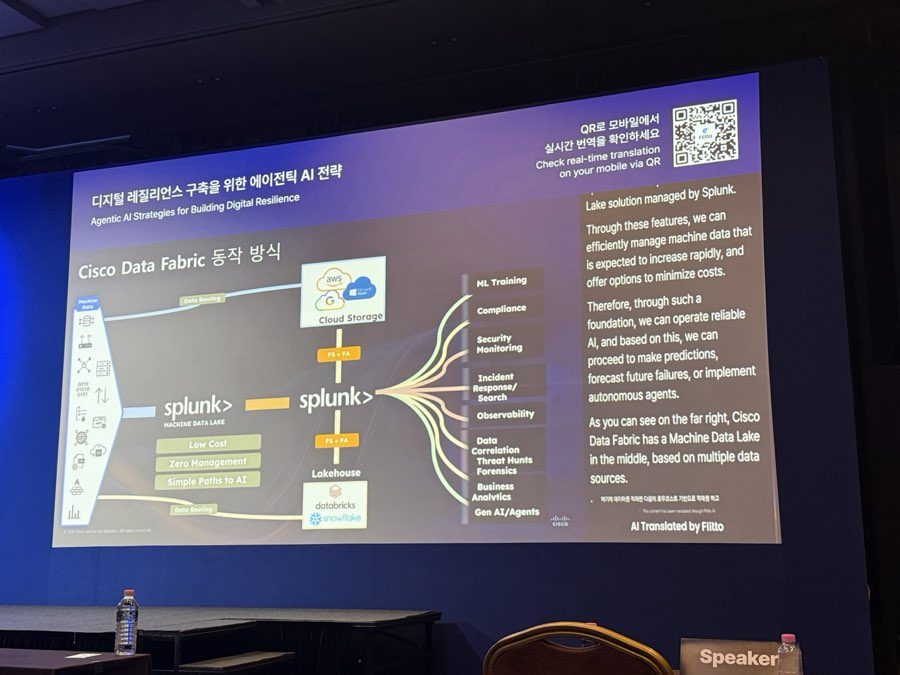
One shared data foundation feeding security, compliance, and AI agents alike.
Vision 2030 pillarsFuture Ready · Enhanced Reputation and Branding
TakeawayRunning AI and cybersecurity on one shared, well-kept system is smart for a small IT team, and it protects our reputation too — a public failure looks the same to outsiders either way.↳ Ties to takeaway #7: silos slow AI more than compute ever will.
Late afternoon · Track A
From Intuition to Intelligence: How AI Has Redefined Revenue Growth세일즈 과학의 혁명: AI는 영업을 어떻게 바꼈는가
Barra Ó Briain — Head of APEC Sales, Gong
Highlights
PwC: 74% of AI's business value goes to just 20% of companies — the ones that redesigned workflows and invested in more oversight, not less.
Formula for a real AI win: time saved × how much better the outcome is. Most companies stop at "time saved."
Top reps talk ~46% of the time vs. 68% for average reps, and wait later in the call to discuss price.
Insight"Time saved times how much better the result is" sounds simple, but most companies — schools too — never actually agree ahead of time on what "better" even means. For our chatbot and advising tool, we need to decide upfront whether we're measuring the easy part (faster replies) or the part that actually matters (more students enrolling and staying), and build that measurement in from day one.
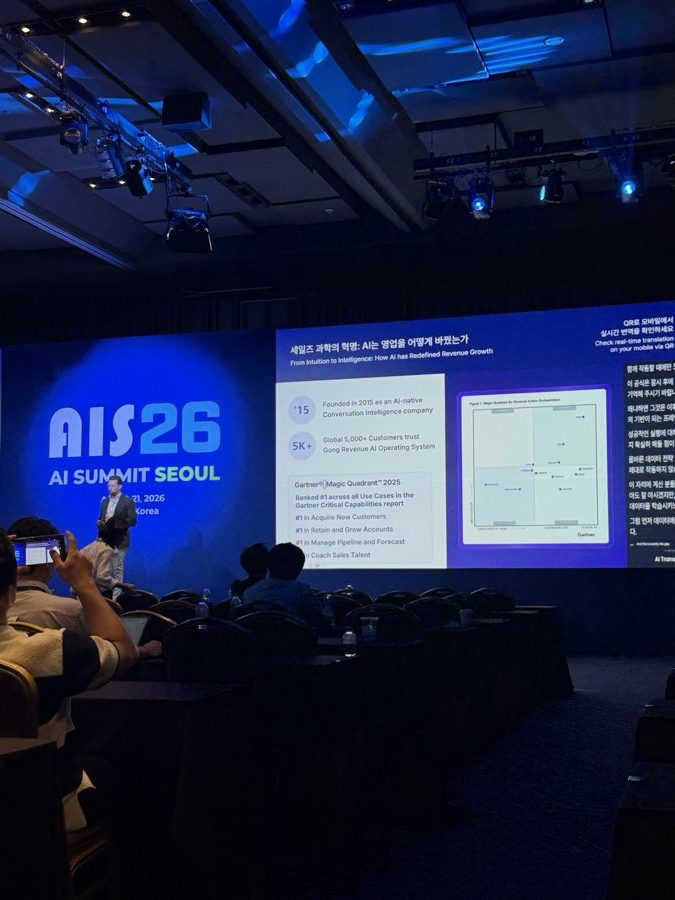
Gong's closing credibility slide — company stats and industry-analyst rankings.
TakeawayFor our Recruitment Chatbot and Advising Agent, we should track both halves — time saved AND whether it actually helped students enroll or stay enrolled. Reporting only the first half to the Board isn't the full picture.↳ Ties to takeaway #9: people + process are the missing link, not just the AI.
Throughout · Expo Floor (through Aug 21)
Expo highlights
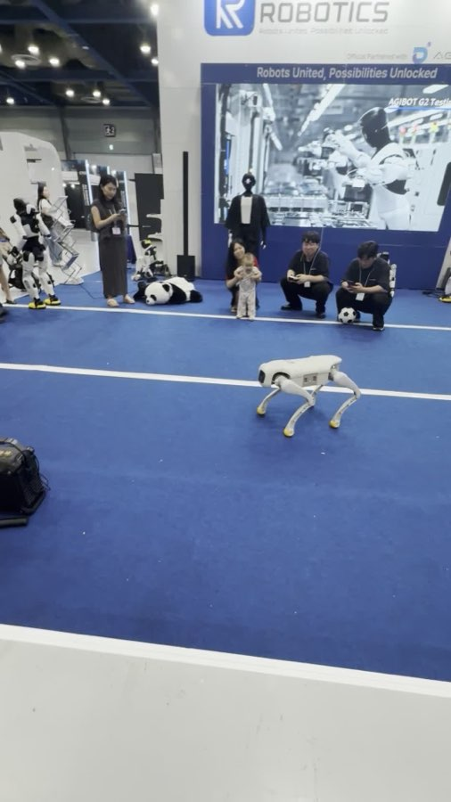
FAIN Robotics × AGIBOT
Their quadruped robot actually trotting around the demo floor — "Physical AI" made tangible, not just slides.
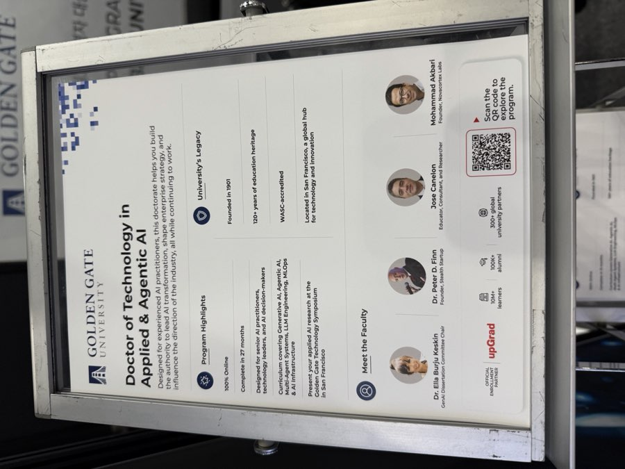
Golden Gate University
A fully online doctorate in Applied & Agentic AI for working practitioners.
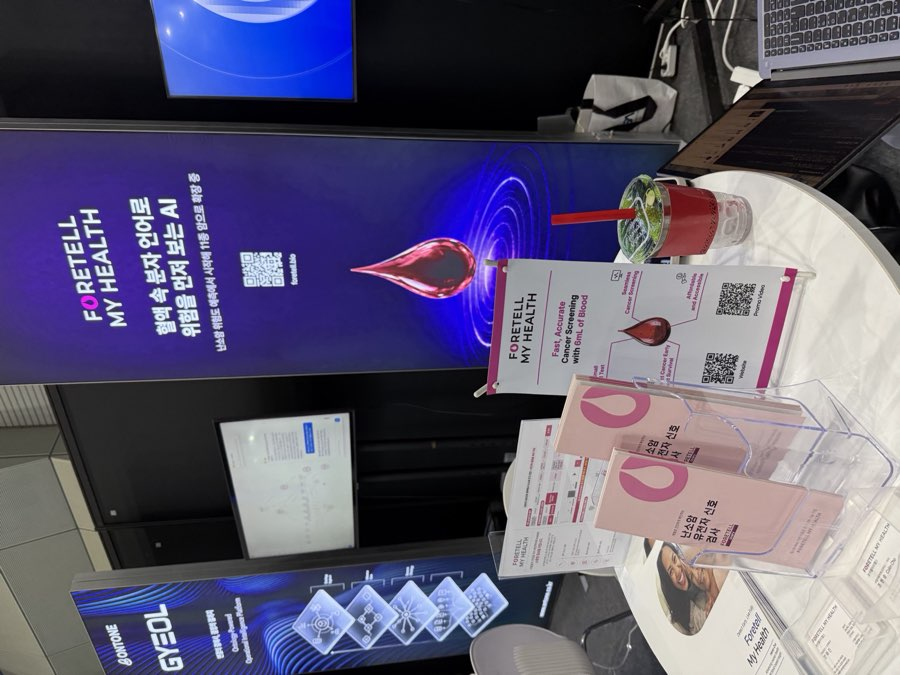
Foretell My Health
A blood-based AI cancer-screening startup, starting with ovarian cancer risk.
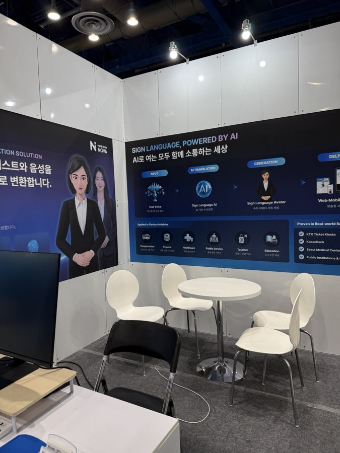
NOVA — AI sign language avatar
Text or voice in, an AI-generated sign-language avatar out — already live on KTX kiosks, KakaoBank, and Seoul Medical Center.
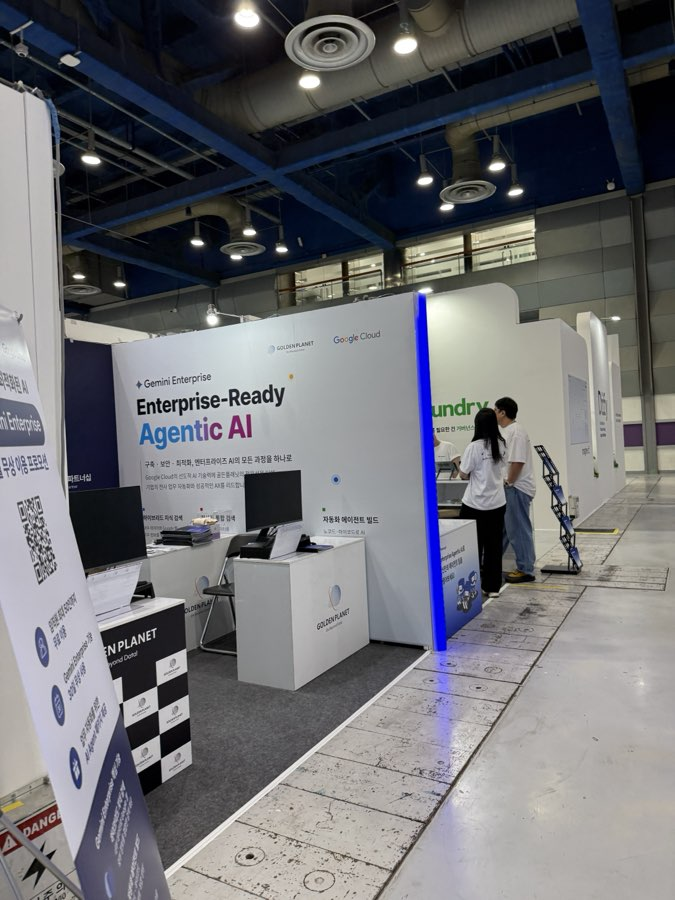
Golden Planet × Google Cloud
"Gemini Enterprise" — pitched plainly as enterprise-ready agentic AI, Google's tech paired with a local system integrator's delivery.
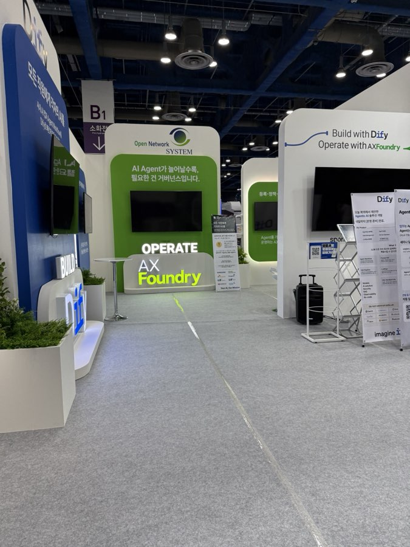
Dify + AX Foundry
"Build with Dify, operate with AX Foundry" — the booth's own tagline was blunt: the more AI agents you have, the more you need governance.
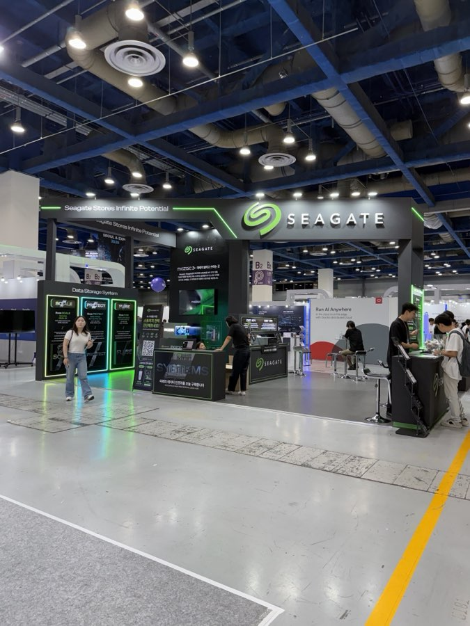
Seagate — same company as Day 1's storage talk
Seeing "Run AI Anywhere" live on the show floor was a good reminder that the talk wasn't abstract — this is an actual product line.
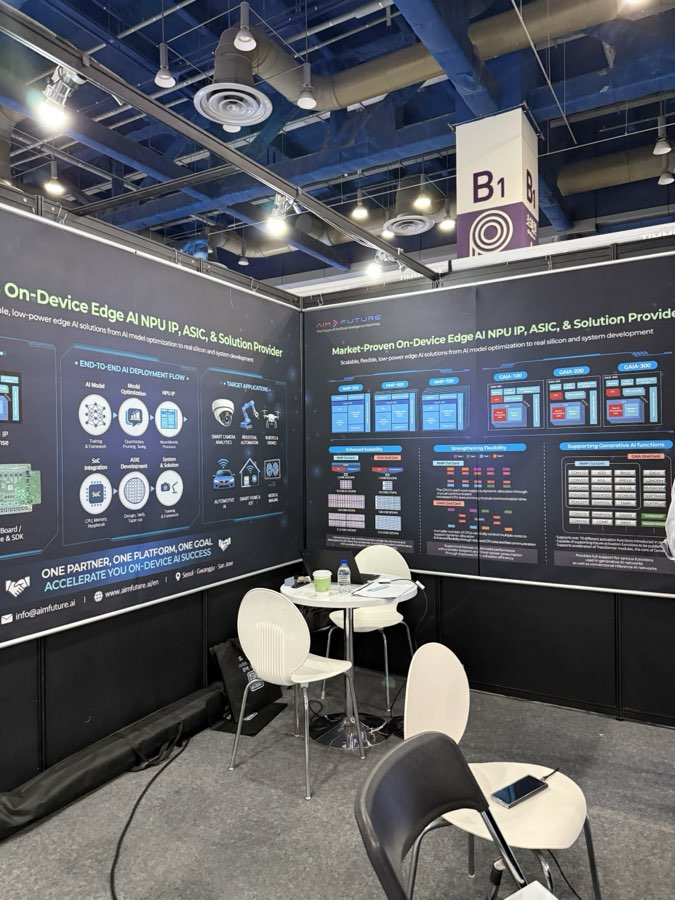
AIM Future
On-device edge AI chips (NPU/ASIC) for cameras, robots, and cars — a reminder that not all AI runs in the cloud.
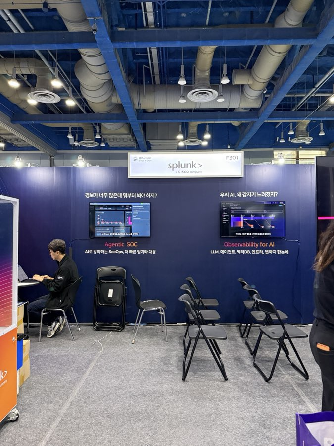
Splunk (a Cisco company)
"Why did our AI suddenly get slow?" — observability for AI agents, from the same company behind Day 2's data-resilience talk.
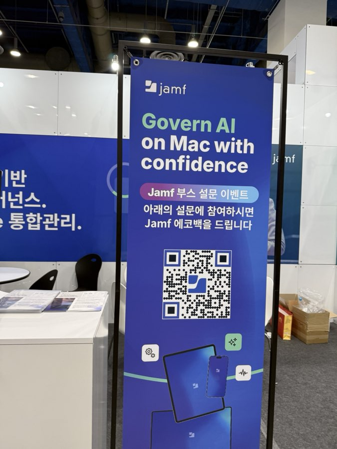
Jamf — "Govern AI on Mac with confidence"
Apple device-management governance for AI specifically — directly relevant given how much of our own device fleet is Mac/iOS.
Vision 2030 pillarsEnhanced Reputation and Branding · Global Partnership Engagement
End of Day 2
Closing
The closing line from the live feed: "Thank you once again for your insightful presentation. This concludes all the sessions of AI Summit Seoul 2026."
04
Four ideas that kept coming back
01
Most AI pilots die before real use — and it's rarely the AI's fault
Messy data, tools bolted onto old workflows, and hesitant leadership were named as the real blockers across five separate sessions on three different tracks.
02
The hard part moved from "which model" to "how do we actually run this"
The $9B+ race among major vendors to embed engineers in customer rollouts shows picking a model is the easy part now.
03
Physical AI needs a stricter safety bar than software AI
The Physical AI panel's "can it be undone?" rule echoed across the manufacturing panel and Seagate's storage-reliability framing.
04
Good data is the prerequisite everyone agreed on, independently
ClickHouse, Seagate, DeepMind, Cisco, and the manufacturing panel all named the same prerequisite in different words.
05
Vision 2030 Alignment: Who Makes This Real
The ideas above are only useful if someone owns turning them into action. This maps the summit's themes onto the five strategic pillars — with a specific office named against each recommendation, because the summit's own most-repeated failure mode was exactly this: no one senior owning the decision to act.
1 · Enrollment Growth
Give the Recruitment Chatbot persistent context across a prospect's full journey. Apply the reversibility test to the Academic Advising Agent now, while it's still in development.
Responsible — Center of Educational Technology (CET), with Admissions; Academic Council for advising-agent guardrails.
Potential ROI
Lower cost per enrolled student — a chatbot that keeps context across the funnel should convert more inquiries without more staff.
Retained tuition revenue from students the Advising Agent flags early enough to keep enrolled.
Average response time to a prospective student inquiry
Term-to-term retention rate among students the Advising Agent flagged as at-risk
2 · Enhanced Reputation and Branding
Publish a first AI case study once Phase 2 pilot results land. Brand Benilde's public AI position around governance discipline, not raw capability.
Responsible — Marketing & Communications, with CET for content; Office of the Chancellor for public positioning.
Potential ROI
Earned media and inbound interest from being the credible "governance-first" story, not the flashiest AI demo.
Stronger position in accreditation and partner conversations that already ask about AI policy.
KPIs to track
External citations/mentions of Benilde's AI governance model (press, academic papers, conference invitations)
Inbound partnership or speaking-invite requests referencing our AI work
3 · Future Ready
Add the three-question go/no-go gate to every Phase 2 pilot before it's proposed for scale-up. Confirm the data warehouse can handle agentic query load before the platform is selected.
Responsible — CET and Academic Council for the gate; CET / IT infrastructure for the data warehouse review.
Potential ROI
Avoided waste on pilots that were never going to reach production — the summit's own baseline says most institutions lose about 80% of AI spend to this.
Avoided cost of a governance incident by catching it before scale, not after.
KPIs to track
% of pilots that pass the go/no-go gate and reach Phase 3 (compare against that 80%-fail baseline)
Time from pilot approval to production-ready
Data warehouse uptime and headroom under real agentic query load
4 · Global Partnership Engagement
Require every shortlisted platform vendor to disclose what deployment support is bundled into their contract. Scope one applied-research partnership with a lab offering free academic-tier tools.
Responsible — CET and Procurement for vendor terms; Office of the Chancellor and academic deans for research partnerships.
Potential ROI
Lower net implementation cost if vendor-bundled setup support replaces work we'd otherwise pay a contractor for.
Free or discounted access to research-grade tools (like DeepMind's academic-tier offerings) instead of paying full commercial price.
KPIs to track
Vendor-provided implementation hours logged per contract
Estimated dollar value of in-kind/free-tier tools secured
Number of active partnerships with a named joint deliverable (not just a signed MOU)
5 · Financial Growth
Report Phase 2 pilot results on both efficiency and effectiveness, not adoption alone. Release Phase 3 budget in gated tranches tied to Phase 2 evidence.
Responsible — CET and Finance for reporting format; the Board / Leadership Team for gated budget release.
Potential ROI
Staff hours saved that can be redirected instead of hired for.
Incremental tuition revenue from any measurable retention or enrollment lift.
Tighter budget discipline from releasing money in tranches instead of one lump sum.
KPIs to track
Advisor/staff hours saved per week (the efficiency half)
Retention or enrollment lift attributable to an AI tool (the effectiveness half — the part most reports skip)
Cost per successful outcome: total AI spend ÷ number of confirmed wins
Actual spend vs. the approved gated-tranche budget
Who leads this, overall
ownership
A single accountable office, not a rotating committee, turns the five rows above from a wish list into a plan. Proposed lead role: a Director, Office of AI-Enabled Transformation, reporting to the Office of the Chancellor, with CET as its operating arm. Decision authority: that Director applies the go/no-go gate and recommends scale-up; the Chancellor's Office holds final sign-off on anything budget-significant or reputationally sensitive.
Possible budget sources: an institutional strategic/innovation fund released in gated tranches; reallocated IT/EdTech operating budget as lower-value tools are retired; vendor co-investment (bundled deployment support); external grants/partnership funding; philanthropic or alumni giving earmarked for innovation.
06
AI Implementation: Roles & Responsibilities
The summit's clearest lesson was that roles without a decision path just recreate the "ad hoc committee" problem. Below is a proposed model for who does what, and who ultimately decides.
1. Digital Transformation Office (Program Lead)
The orchestrator, not the builder of everything.
Owns the roadmap's cadence and the master pilot list — the one place that can see across IT, CET, and Academic Affairs at once.
Runs the three-question go/no-go gate on every pilot before it's proposed for scale-up.
Prepares Board/BLT reporting on both efficiency and effectiveness, not adoption numbers alone.
Escalates anything hitting the reversibility line to Leadership — does not decide it alone.
2. IT Team
The infrastructure and safety net.
Owns the data-warehouse / agentic-query-capacity question before any platform is selected college-wide.
Runs security review on every AI vendor: data residency, access scope, breach exposure.
Owns uptime and support once a pilot graduates from CET's hands into daily operations.
3. Innovation & EdTech (Center of Educational Technology)
The pedagogical and use-case owner.
Vets tools against the EdTech AI Tools Guide rubric before anything reaches a classroom or advisor.
Runs the actual pilots (syllabus AI, Academic Advising Agent, Mental Health Agent) and reports results.
Owns faculty and student training under the AI Literacy Framework.
4. Leadership (VP for Admin & Innovation, Office of the Chancellor, BLT)
The risk owner and budget releaser — the "who presses the button" role the summit's most-repeated failure mode says usually goes unfilled.
Signs off on anything budget-significant or reputationally sensitive.
Releases Phase 3 scale-up funding in gated tranches tied to Phase 2 evidence.
Sets the non-negotiable boundary: which decisions, per the reversibility test, never become AI's call.
5. Other School Leaders (Academic Council, Deans/Program Chairs, Finance, Marketing & Comms, Student Affairs)
The domain implementers — a pilot that works in CET's hands still needs a Dean or Program Chair to make it standard practice.
Academic Council: policy guardrails for anything touching grading, advising, or academic integrity.
Finance: the efficiency-times-effectiveness reporting format, and sign-off on budget tranches.
Marketing & Communications: the public "governance discipline" narrative.
Student Affairs: co-owns the Mental Health Agent given its stakes.
The decision pathCET pilots → Digital Transformation Office runs the go/no-go gate → IT signs off on infrastructure/security → Leadership approves scale + budget → the domain leader owns rollout. Any step that hits the reversibility line routes to Leadership regardless of how well the pilot tested.
07
Peer Benchmarks: What Other Schools Are Already Doing
These are named, sourced examples — not summit talk, but documented institutional moves already underway at other universities. Each is linked below so it can be independently verified before it's cited externally.
Arizona State University × OpenAI
Global Partnership Engagement
ASU became the first university with an institutional-level OpenAI partnership in January 2024, and has since expanded it to give every student, faculty, and staff member free access to ChatGPT Edu with GPT‑5. Nearly 700 projects have come out of its internal "AI Innovation Challenge," with more than 175 proposals submitted in the first two weeks alone. This is the most direct precedent for what a bundled, vendor-supported campus-wide rollout can look like at scale.
NUS announced a strategic OpenAI collaboration rolling out ChatGPT Edu to all students, faculty, and staff starting August 31, 2026, alongside new curriculum requirements and research platforms. As the closest Asia-Pacific peer example to what Benilde is weighing for its Phase 2 platform decision, it's a useful reference point for contract terms and rollout sequencing.
Georgia Tech's long-running AI teaching-assistant project, running since 2016 and now rebuilt on ChatGPT, is recognized as the first documented chatbot to enhance teaching presence in online learning; IDC has separately named Georgia Tech a national leader in higher-ed AI deployment. Worth noting: Georgia Tech's AVA Lab is also where the "sidecar controller" research referenced in this summit's opening keynote (Day 1, Session 1) comes from — the same lab, two different angles on the same problem.
Saudi Electronic University — academic advising chatbot
Enrollment Growth
A peer-reviewed, published deployment of an AI academic-advising chatbot, evaluated against student satisfaction, advisor workload reduction, and chatbot accuracy — a directly comparable, evidence-based precedent for Benilde's own Academic Advising Agent pilot, including the kind of measurement framework worth adapting.
Philippine higher-ed AI governance landscape — Benilde already stands out
Enhanced Reputation and Branding
Peer-reviewed comparative research found at least eight Philippine universities have issued formal AI governance guidelines. Most of them — UP, UPOU, Ateneo de Manila, DLSU, and FEU — use a "soft," principle-based approach. Benilde is specifically identified in the literature as the outlier with a "hybrid" model, combining policy-driven requirements with maintained flexibility. This isn't a summit claim or an internal assessment — it's an externally published finding, which makes it a genuinely strong, citable line for Benilde's public AI narrative (see Pillar 2 above) rather than something the institution is only saying about itself.
Source — Toquero, "Trends, Trajectories and Tomorrows of AI Regulations in Philippine Higher Educational Institutions," Higher Education Quarterly (2026); corroborated by comparative analyses on ResearchGate / Zenodo.